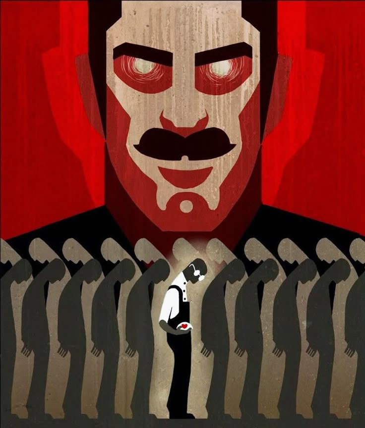

¿Quién está bajo la mirada?
Soy una apasionada de la literatura, la tecnología y las ideas que nos hacen cuestionar el mundo que habitamos. 1984 de George Orwell marcó un antes y un después en mi forma de entender el poder, la libertad y la verdad. A través de Ecos de 1984, busco explorar cómo los temas de esta novela resuenan en nuestra sociedad actual, desde la vigilancia digital hasta la lucha por preservar el pensamiento crítico.
Este blog es mi espacio para compartir reflexiones, conectar con lectores que también sientan el peso de la mirada del "Gran Hermano" y, sobre todo, para recordar que pensar es resistir.
